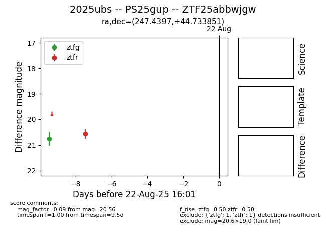

Target 2025ubs at 2025-08-22 18:11, see:
FINK: fink-portal.org/ZTF25abbwjgw
Lasair: lasair-ztf.lsst.ac.uk/objects/ZTF25abbwjgw
ALeRCE: alerce.online/object/ZTF25abbwjgw
TNS: wis-tns.org/object/2025ubs
YSE: ziggy.ucolick.org/yse/transient_detail/2025ubs
alt names
ZTF25abbwjgw (ztf,alerce)
2025ubs (tns,yse)
PS25gup (panstarrs)
coordinates:
equatorial (ra, dec) = (247.4397,+44.73385)
galactic (l, b) = (70.0839,+43.42044)
photometry
last ztfg=20.75, ztfr=20.56
1 ztfg, 1 ztfr detections
